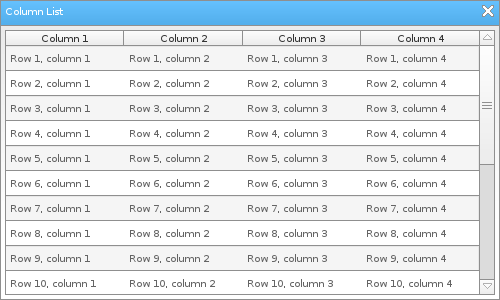

Löve Frames - The Column List Object
Return to Index
Information
The column list object is similar to the list object except it only displays vertically and has columns.
Rows can be added with column specific information.
Example Use
local frame = loveframes.Create("frame")
frame:SetName("Column List")
frame:SetSize(500, 300)
frame:CenterWithinArea(unpack(demo.centerarea))
local list = loveframes.Create("columnlist", frame)
list:SetPos(5, 30)
list:SetSize(490, 265)
list:AddColumn("Column 1")
list:AddColumn("Column 2")
list:AddColumn("Column 3")
list:AddColumn("Column 4")
for i=1, 20 do
list:AddRow("Row " ..i.. ", column 1", "Row " ..i.. ", column 2", "Row " ..i.. ", column 3", "Row " ..i.. ", column 4")
end

Event Callbacks
OnRowClicked - Called when a row within the object is clicked
- Arguments passed: self [object], row [object], row data [table]
- Arguments passed: self [object]
- Arguments passed: parent [object], row [object], data [table]
- Arguments passed: parent [object], row [object], data [table]
- Arguments passed: self [object], row [object], row data [table]
local columnlist = loveframes.Create("columnlist")
columnlist.OnRowClicked = function(parent, row, rowdata)
for k, v in ipairs(rowdata) do
print("Column " ..k.. ": " ..v)
end
end
OnScroll - Called every time the list is scrolled - Arguments passed: self [object]
local list = loveframes.Create("list")
list.OnScroll = function(object)
print("The list was scrolled.")
end
OnRowRightClicked - Called when a row is right-clicked - Arguments passed: parent [object], row [object], data [table]
local list = loveframes.Create("list")
list.OnRowRightClicked = function(parent, row, data)
print("A row was right-clicked.")
end
OnRowSelected - Called when a row is selected - Arguments passed: parent [object], row [object], data [table]
local list = loveframes.Create("list")
list.OnRowSelected = function(parent, row, data)
print("A row was selected.")
end
Methods
AdjustColumns - Adjusts the width of the object's columns
- Note: This method is used by the object internally. You should not use it unless you know what you are doing.
- Note: Each argument is for a column (ex: argument will be for column 1).
- Returns 2 values: column width [number], column height [number]
- Note: This is used to specify how many color alternations rows should have. Each row that is added to the object will have a higher color index than the previous row. When it reaches the max color index the color alternator will start at 1 again. These color index ids will be accessible via the column list row drawing function, making it easier to have multicolored rows.
- Returns 1 value: scroll amount [number]
- Returns 1 value: scroll amount [number]
- Returns 1 value: dtscrolling [boolean]
- Returns 1 value: rows [table]
- Returns 1 value: enabled [boolean]
- Returns 1 value: enabled [boolean]
- Note: This method is used by the object internally. You should not use it unless you know what you are doing.
object:AdjustColumns()AddColumn - Adds a column to the object
object:AddColumn(name[string])AddRow - Adds a row to the object
- Note: Each argument is for a column (ex: argument will be for column 1).
object:AddRow(...[string or number])GetColumnSize - Adds a row to the object
- Returns 2 values: column width [number], column height [number]
local w, h = object:GetColumnSize()SetMaxColorIndex - Gets the width and height of a column
- Note: This is used to specify how many color alternations rows should have. Each row that is added to the object will have a higher color index than the previous row. When it reaches the max color index the color alternator will start at 1 again. These color index ids will be accessible via the column list row drawing function, making it easier to have multicolored rows.
object:SetMaxColorIndex(max[number])Clear - Removes all items from the object's list
object:Clear()SetAutoScroll - Sets whether the object should auto scroll when a new item is added. If set to true, the object will scroll to the end of itself when a new item is added to it.
object:SetAutoScroll(autoscroll[boolean])SetButtonScrollAmount - Sets the amount that the object's scroll buttons will scroll the object's list items by
object:SetButtonScrollAmount(scrollamount[number])GetButtonScrollAmount - Sets the amount that the object's scroll buttons will scroll the object's list items by
- Returns 1 value: scroll amount [number]
local scrollamount = object:GetButtonScrollAmount()SetMouseWheelScrollAmount - Sets the amount that the mouse wheel will scroll the object's list items by
object:SetMouseWheelScrollAmount(scrollamount[number])GetMouseWheelScrollAmount - Gets the mouse wheel's scroll amount
- Returns 1 value: scroll amount [number]
local scrollamount = object:GetMouseWheelScrollAmount()SetColumnHeight - Sets the height of the object's columns
object:SetColumnHeight(height[number])SetDTScrolling - Sets whether or not the object should use delta time when caclulating how many pixels it's scrollbar needs to move
object:SetDTScrolling(dtscrolling[boolean])GetDTScrolling - Gets whether or not the object should use delta time when caclulating how many pixels it's scrollbar needs to move
- Returns 1 value: dtscrolling [boolean]
local dtscrolling = object:GetDTScrolling()SelectRow - Selects the specified row
object:SelectRow(row[object], ctrl[boolean])DeselectRow - De-selects the specified row
object:DeselectRow(row[object])GetSelectedRows - Gets the object's selected rows
- Returns 1 value: rows [table]
local rows = object:GetSelectedRows()SetSelectionEnabled - Sets whether or not the object's rows can be selected
object:SetSelectionEnabled(enabled[boolean])GetSelectionEnabled - Gets whether or not the object's rows can be selected
- Returns 1 value: enabled [boolean]
local enabled = object:GetSelectionEnabled()SetMultiselectEnabled - Sets whether or not multiple rows can be selected at the same time
object:SetMultiselectEnabled(enabled[boolean])GetMultiselectEnabled - Gets whether or not multiple rows can be selected at the same time
- Returns 1 value: enabled [boolean]
local enabled = object:GetMultiselectEnabled()RemoveColumn - Removes the specified column
object:RemoveColumn(id[number])SetColumnName - Sets the specified column's name
object:SetColumnName(id[number], name[string])RemoveRow - Removes the specified row
object:RemoveRow(id[number])SetRowColumnText - Sets the text of the specified column on the specified row
object:SetRowColumnText(text[string], rowid[number], columnid[number])SetRowColumnData - Sets the text for each column on the specified row
object:SetRowColumnText(rowid[number], columndata[table])SizeToChildren - Sets the object's height to the combined height of its children. If max is specified, the object will not become higher than max.
object:SizeToChildren(max[number])